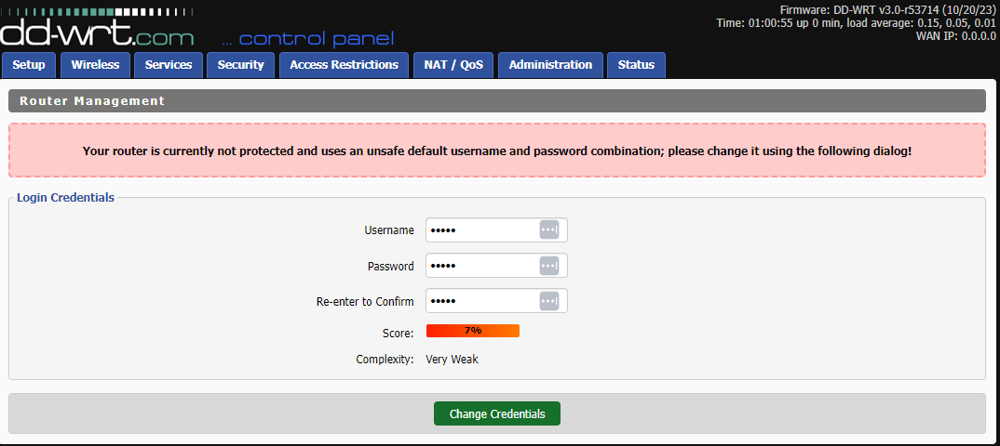
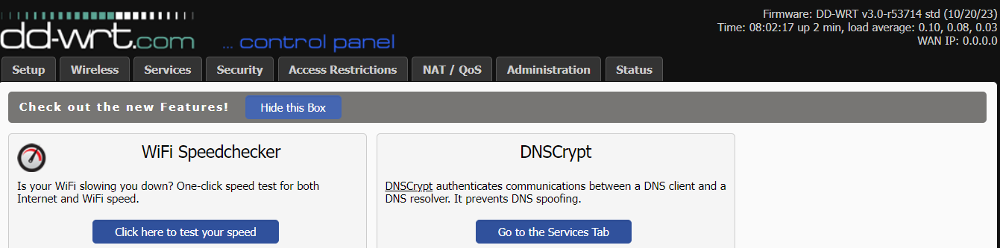
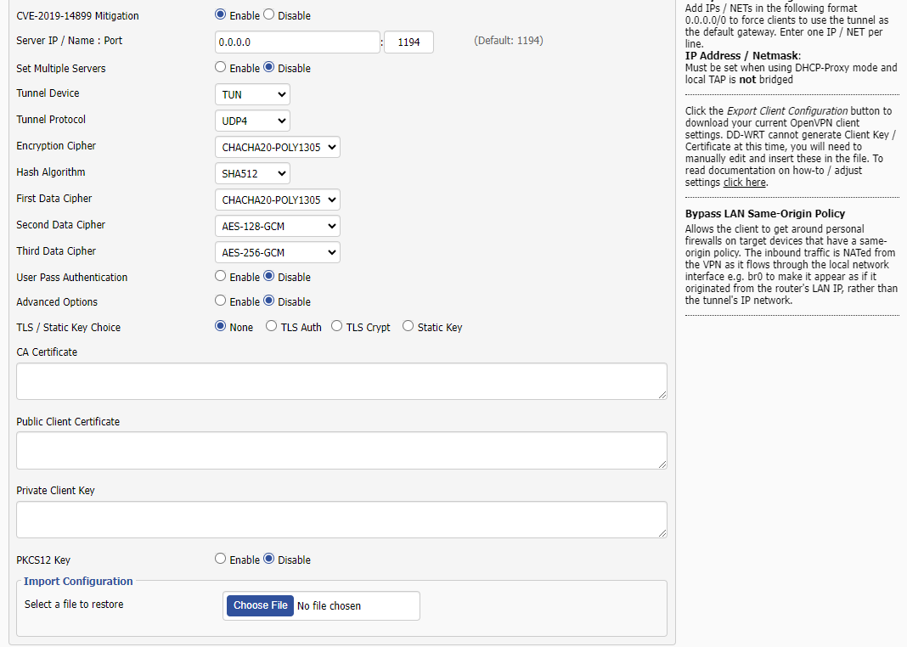
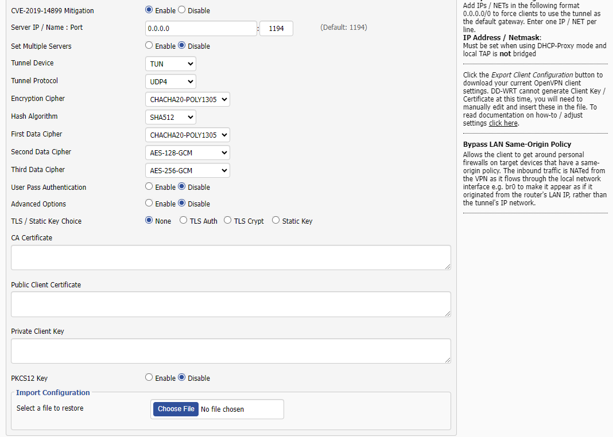
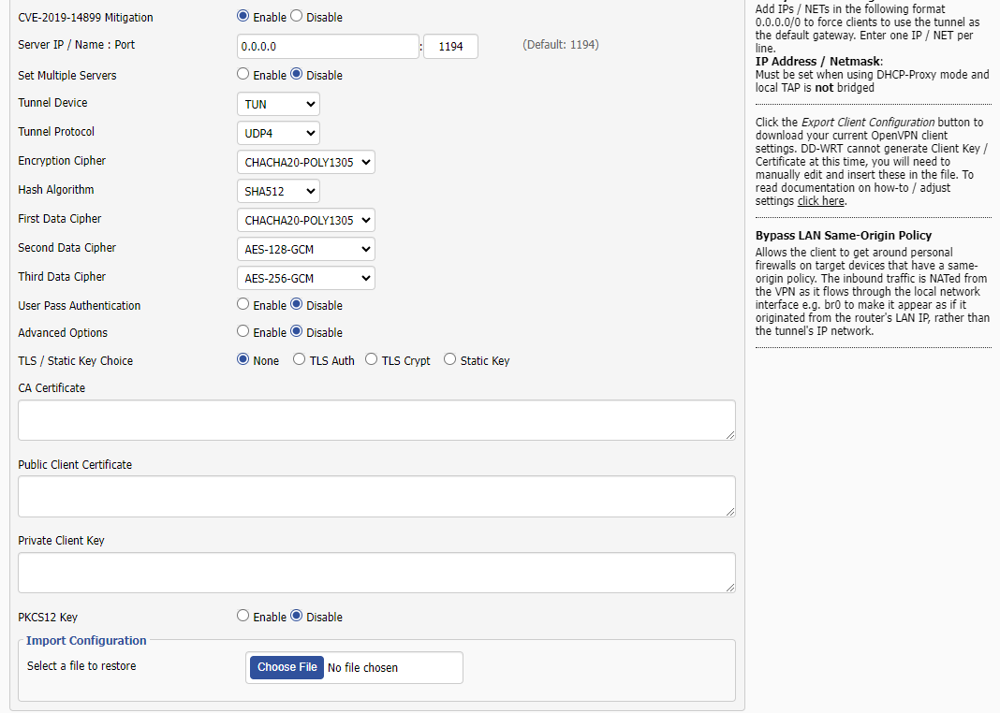

 




Setting up Hotspot Sheild VPN on DD-WRT Router
This tutorial will guide you through the process of setting up Hotspot Shield VPN on your DD-WRT router from admin setup to verifying and testing the VPN connection
Here are the steps to follow:
- We are using the Netgear router R7000 with DD-WRT Firmware Version 3.0-r53714 (10/20/23)
- Connect your router using a LAN cable to your ISP Modem
- After setting up admin, login to the router web interface and click Setup > IPV6. Make sure this is disabled
- Click on the Services tab, then choose VPN
- Scroll down and enable OpenVPN Client
- After you enable the OpenVPN client, you will find default values already filled out, you can ignore them for now, this will not matter later.
- Scroll Down until you will see the 'Import Configuration' option
- Login to your account from the Hotspot Shield website, On the home page, Click on Hotspot Shield VPN on the left below the Home Tab, scroll Down and click on router
- Select your preferred virtual location. Open Notepad and copy the Username and Password that was generated. These are exclusive to your credentials only.
- Click on the Download button to download your configuration in your downloads folder.
- On the 'Import Configuration' page, click on 'Choose File'. Select the configuration file you have just downloaded. Click 'Open'
- You will find that the default values have been changed to the required values for your router except the username and password field.
- Enter the Username and Password you have saved a while ago on Notepad
- Scroll down and click 'Save' then 'Apply Settings'. Please give the router a few seconds to update.
- Click on the 'Status' tab then click on OpenVPN.
- If you see the client status : Connected, then you have configured it correctly
- Open another browser tab and go to ipleak.net, you should have the VPN virtual location IP displayed